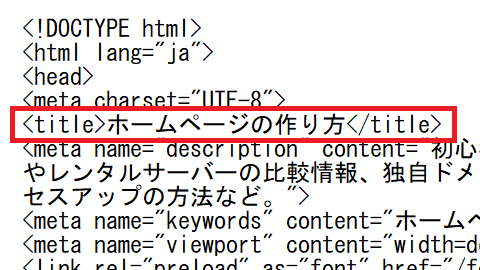
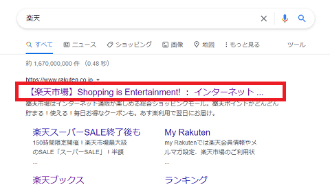
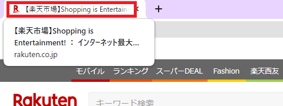
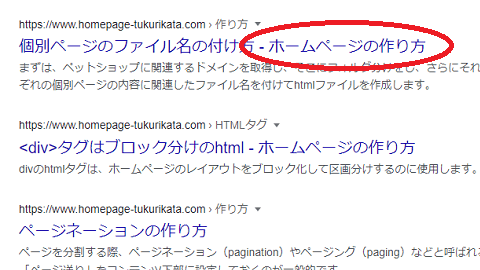
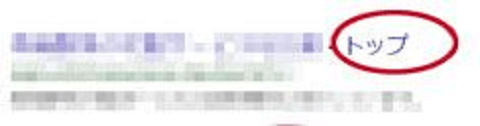
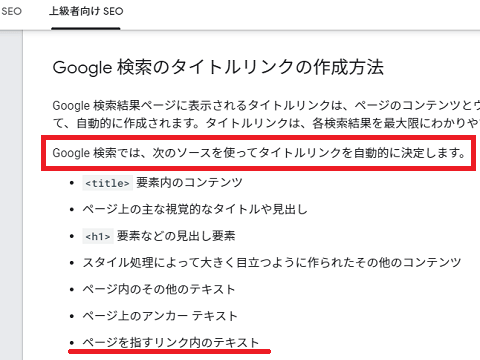

タイトルタグの付け方を最適化
サイト名や個別ページのタイトルタグにはキーワードを盛り込んで最適化しましょう。
このタイトルタグというのは、HTMLソースを表示した際、<head>タグ内の<title></title>で囲まれた部分が該当します。
例えば、当サイトの「タイトルタグ」はこの箇所になります。

SEO対策上、このタイトルタグに書かれた内容自体も評価されますが、他サイトからリンクされる際や内部リンクのアンカーテキストとしても使用されるため、コンテンツ内容に合ったキーワードを盛り込むことをおすすめします。
例えば、このページでいいますと、もし他サイトから参照される際は「タイトルタグの付け方を最適化」の文言でリンクされることが多くなるはずです。そして、そのリンクには「タイトルタグ」といった文字列が含まれているため、検索エンジンはこれらのキーワードについて書かれたページと認識されやすくなります。
結果的に、それらのキーワードで検索された際にヒットしやすくなります。
タイトルタグはそれ自体が検索エンジンに評価されるほか、被リンク元のアンカーテキストとして選択されることも多くなるため、検索回数の多いキーワードを含めて簡潔に付けるようにしましょう。
トップページでのタイトルタグの付け方
サイトのトップページのタイトルタグの場合、一般的には「サイト名」を付けることになります。
また、必ずしも一致させる必要はありませんが、トップページの「h1タグ」についてもタイトルタグのサイト名と同じものを設定しているホームページが多いです。
けれども、このh1タグについては厳密に一致させる必要はありません。
例えば、楽天の場合、「タイトルタグ」と「h1タグ」は以下のようになっています。
<title>【楽天市場】Shopping is Entertainment! ： インターネット最大級の通信販売、通販オンラインショッピングコミュニティ</title>
<h1 class="header-logo">楽天市場</h1>
概ね、タイトルタグ内では「サイト名」のほか、検索でヒットして欲しいその他の情報も追加することができますが、h1タグには単に「サイト名のみ」を記載しているケースが多いです。
特定のキーワードで検索された際、このタイトルタグ内にキーワードが入っていないと検索結果で表示されにくい傾向がありますので、検索でヒットしてほしいキーワードはタイトルタグ内に必ず記述するようにしましょう。
このタイトルタグの内容は検索結果では以下のように表示されますが、文字数に制限はないものの、長すぎると検索結果では「…」で省略されて表示されてしまいます。

加えて、ブラウザのタブにも表示されます。

概ね、30文字程度までは検索結果で表示されますが、多くのキーワードを詰め込むとSEO効果が分散してしまうため、できるだけ簡潔に分かりやすく記載することをおすすめします。また、キーワードは最初の左の方が重要視されるため、重要なキーワードはタイトルタグ内の左側にもっていくことをおすすめします。
もし複数のキーワードを盛り込みたい場合、<meta name=のページ説明文の方で詳細に記載するようにしましょう。
個別ページでのタイトルタグの付け方
一方、サイトのトップページではなく、個別ページでのタイトルタグの付け方には複数のパターンが存在します。概ね、h1やh2タグとの組み合わせによって以下のパターンがあります。
■パターン①
<title>個別ページタイトル名 - サイト名</title>
<div>サイト名</div>
<h1>個別ページタイトル名</h1>
→ このパターンはホームページ形式に多い傾向があります。
■パターン②
<title>個別ページタイトル名 - サイト名</title>
<h1>サイト名</h1>
<h2>個別ページタイトル名</h2>
→ このパターンは自動でhtmlが出力される無料ブログに多い傾向があります。
■パターン③
<title>個別ページタイトル名</title>
<div>サイト名</div>
<h1>個別ページタイトル名</h1>
→ 当サイトはこれで作ってます。
他にも、サイト名が左側の先頭になっていたり、区切りにハイフン「 - 」ではなく、縦線「│」が使われているなど、微妙に違っているケースもあります。
<title>サイト名 - 個別ページタイトル名</title>
<title>個別ページタイトル名│サイト名</title>
これらのうちどれがいいのかというと、当サイトでは「パターン①」をおすすめしております。
例えば、以下のような個別ページがあったとします。
<title>日経平均株価10万円を突破 - Yahooニュース</title>
<div>Yahooニュース</div>
<h1>日経平均株価10万円を突破</h1>
この場合、一番重要性が高いのは記事の見出し部分になり、サイト名の「Yahooニュース」の情報には特に重要性がありません。そのため、「記事の見出し」をh1で囲み、タイトルタグ内でも左側の最初の方に記述する付け方になります。
一方で、サイト名の「Yahooニュース」には重要性がないため、h1やh2の見出しタグを付けず、単なる<div>で囲い、タイトルタグ内でも後ろの方に記述します。
つまり、「タイトルタグ内の最初の左側の部分」と「h1タグ」は重要性が高く、相対的に重み付けがされるため、個別ページ固有の内容をそちらに記述する方法になります。このように作ることで、検索エンジン側でも他のページとの違いを明確に把握できるようになり、個別ページでもヒットしやすくなる傾向があります。
個性的で独自性のあるサイト名の付け方
ページ内容と無関係なキーワードを盛り込むと、その分、SEO的には関連性が薄くなってしまうため、できるだけ関係ないものは使用するべきではありません。かといってキーワードオンリーというのも個性がなくなってしまいます。
検索エンジンはオリジナリティーのないサイトを嫌いますので、タイトルタグについてもできるだけ独自性を出すことをおすすめします。
例えば、キャッシング比較などのキーワードで検索してみると同じようなタイトル名のホームページがズラリと並んでおり、検索者にとってはどれがどれだか迷ってしまうことになります。
そのため、検索結果に表示された際、他サイトと自サイトの識別ができ、一義的に決まるような個性的なキーワードも同時に含ませることをおすすめします。
例えば、「掲示板」のキーワードでいいますと、「２ちゃんねる掲示板」のような形になります。
この場合、「掲示板」のキーワードで検索した際にヒットしつつも、「２ちゃんねる」の固有名詞で他サイトとの識別ができるようになります。次からそのサイトに再訪問したい場合、「掲示板」ではなく、「２ちゃんねる」や「２」で検索すれば１発でヒットしますので、どのサイトか迷うことがなくなります。
そのような100%確実にヒットするような、オリジナルなキーワードもタイトルタグに含ませておくとユーザビリティーの向上につながります。
ちなみに、このオリジナルキーワードについては競合サイトがいないため、特にSEO対策をしなくても自然に上位に表示されるはずです。オンリーワンなら検索結果でもナンバーワンになりますので、特に何も対策する必要はありません。
SEO対策については競合キーワードに絞って行うとよいでしょう。
個別ページのタイトルでサイト名が補完されるケース
注意したい点としましては、当サイトのようにタイトルタグに「個別ページ名のみ」を記載し、サイト名を省略している場合、検索結果では検索エンジン側で勝手に「 - サイト名」を補完してしまうという点です。
例えば、以下のようにタイトルタグを記述していたページがあったとします。
<title>個別ページのファイル名の付け方</title>
けれども、実際の検索結果では以下のように「 - サイト名」が補完されて表示されています。

上記のパターン①のように、サイト名を省略せずに記述している場合は補完されませんが、パターン③のように「個別ページ名のみ」で記述している場合は検索エンジン側でサイト名を補ってしまうこともあります。
当サイトの場合はこれでもよいのですが、なかには以下のように、サイト名がおかしな状態で認識されてしまうケースもあります。

これはつまり、サイト名が「トップ」として認識されているわけですが、ぱんくずリストなどに設置された内部リンクの「トップ」などのアンカーテキストが影響することもあります。通常の場合、内部リンクで「トップ」や「ホーム」などの記述がされていたとしても、サイト名として認識されることはまずありませんが、たまにこのようになるケースもあります。
Googleでは様々な情報を元に検索結果で表示されるタイトルが自動的に決定されるため、タイトルタグに書いた内容がそのまま使用されるわけではなく、内部リンクのテキストなどが影響することもあります。

そのため、検索結果でのサイト名の表示がおかしい場合には、タイトルタグだけではなく、h1やh2タグ、あるいは内部リンクのアンカーテキストなども確認してみることをおすすめします。